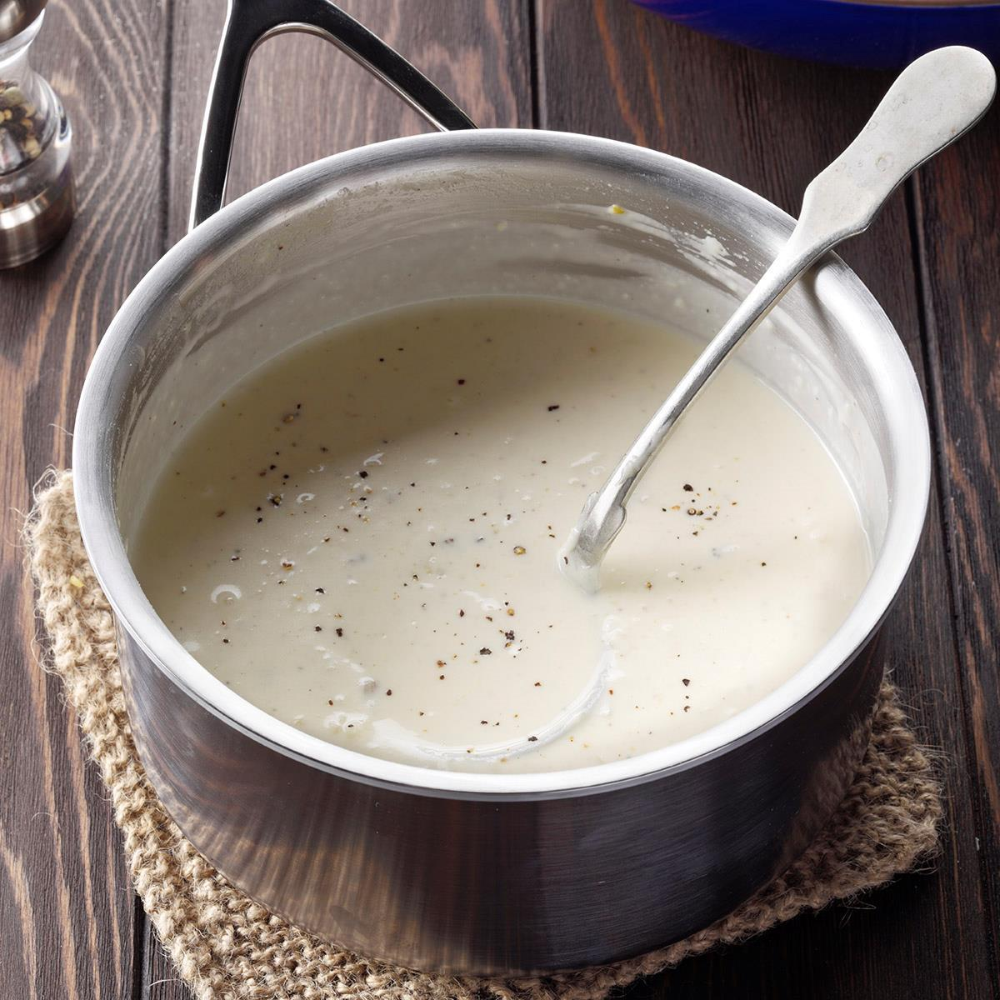

Absolutely Alfredo Sauce

Description
One of these days, I'm gonna get organezized. But until then, I'll be gulping down this delicious alfredo sauce
I make right in my kitchen here.
I think about this stuff day and night, but especially when I have to clean the
backseat of my cab. Hey, it's not so bad. Other nights, I'm cleaning up the blood.
Ingredients
- 1/2 cup of butter
- 1 1/2 cups heavy whipping cream
- 2 teaspoons garlic minced
- 1/2 teaspoon Italian seasoning
- 1/2 teaspoon salt
- 1/4 teaspoon pepper
- 2 cups freshly grated parmesan cheese (not the powdered bullshit)
Steps
- Melt the butter in a deep, dark pan.
- Pour on that heavy cream.
- Stir that around. Get some little bubbles going. Stare at the bubbles until the slow zoom is finished.
- Pop those seasonings in there.
- Sprinkle and stir the parmesan. Keep doin' it till you have no parmesan left. If you're getting clumpy,
you don't stir fast enough. You could also use a blender.
- Enjoy.
BACK TO HOME